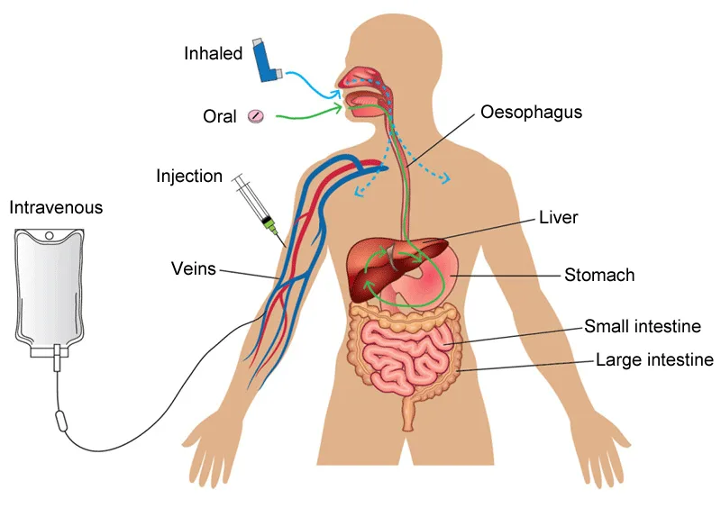

Expanded Nursing Uganda Explanation
Medicines used in pediatrics. should be reviewed through safe maternal and newborn assessment, early recognition of danger signs, respectful communication and timely referral. Connect the definition to vital signs, bleeding, fetal or newborn wellbeing, patient education and local protocol requirements.
Contents, 28 sections (tap to expand)
01 DRUGS USED IN PAEDIATRICS
The field of pediatric pharmacology focuses on the safe and effective use of medications in children, from infancy to adolescence .
Pediatric patients require special consideration due to their developing physiology, which affects how drugs are absorbed, distributed, metabolized, and excreted. Here is an introduction to the key aspects of drugs used in pediatrics:
02 Nursing Considerations in Pediatric Pharmacology
1. Developmental Pharmacokinetics :
- Absorption : The gastrointestinal tract of infants and young children is still developing, which can affect the absorption of oral medications.
- Distribution : The distribution of drugs can vary due to differences in body composition, such as higher total body water and lower fat content in infants.
- Metabolism : The liver enzymes responsible for drug metabolism are not fully mature in newborns and infants, leading to slower drug clearance.
- Excretion : Renal function is also immature in newborns, affecting the excretion of drugs and their metabolites.
2. Dosing Considerations :
- Dosing in pediatrics is often based on body weight or body surface area rather than fixed doses used in adults.
- Growth and development can rapidly change, requiring frequent adjustments in dosing.
3. Safety and Adverse Effects :
- Children are more susceptible to certain adverse effects due to their developing organs and systems.
- Long-term effects of medications on growth, development, and future health must be considered.
4. Off-Label Use :
- Many medications used in pediatrics are not specifically approved for use in children , leading to off-label prescribing based on clinical experience and available data.
03 Ampicillin
- Dose : 50 mg/kg
- Class : Beta-lactam antibiotic, specifically a penicillin derivative.
- Mechanism of Action : Inhibits bacterial cell wall synthesis by binding to penicillin-binding proteins.
Indications :
- Effective against Gram-positive bacteria like Streptococcus pneumoniae , Enterococcus faecalis , and some Gram-negative bacteria like Haemophilus influenzae .
- Bacterial infections (e.g., pneumonia, meningitis)
- Urinary tract infections
- Otitis media
- Sepsis
- Endocarditis prophylaxis
- Gastrointestinal infections
- Skin and soft tissue infections
Contraindications:
- Hypersensitivity to penicillin or cephalosporins
- History of severe allergic reactions (anaphylaxis)
- Severe renal impairment
- Infectious mononucleosis (risk of rash)
Nursing Considerations:
- Monitor for allergic reactions (e.g., rash, difficulty breathing).
- Assess renal function prior to administration.
- Administer with caution in patients with a history of seizures.
- Confirm proper dosing based on weight and age.
- Pharmacokinetics : Ampicillin is absorbed in the gastrointestinal tract but is susceptible to degradation by stomach acids. It has good tissue penetration and crosses the placenta.
- Adverse Effects : Diarrhea, allergic reactions, including anaphylaxis in susceptible patients.
04 Gentamicin
- Dose : 7.5 mg/kg
- Class : Aminoglycoside antibiotic.
- Mechanism of Action : Bactericidal, inhibits bacterial protein synthesis by binding to the 30S ribosomal subunit.
Indications :
- Treatment of severe infections caused by Gram-negative bacteria like E. coli and Klebsiella ; also used in neonatal sepsis.
- Serious bacterial infections (e.g., sepsis, pneumonia)
- Urinary tract infections
- Infections in immunocompromised patients
- Endocarditis (in combination with other antibiotics)
- Osteomyelitis
- Intra-abdominal infections
- Meningitis (if caused by susceptible organisms)
Contraindications :
- Hypersensitivity to aminoglycosides
- Pre-existing renal impairment
- Myasthenia gravis
- Concurrent use of other nephrotoxic or ototoxic drugs
Nursing Considerations:
- Monitor renal function and drug levels (peak and trough).
- Assess for signs of ototoxicity (e.g., tinnitus, dizziness).
- Administer IV slowly to reduce the risk of toxicity.
- Ensure hydration to minimize nephrotoxicity.
- Pharmacokinetics : Poor oral absorption; given intravenously or intramuscularly. Mainly excreted through the kidneys.
- Adverse Effects : Ototoxicity, nephrotoxicity, vestibular damage.
05 Benzyl Penicillin (Penicillin G)
- Dose : 50,000 IU/kg
- Class : Beta-lactam antibiotic.
- Mechanism of Action : Inhibits cell wall synthesis, particularly effective against Gram-positive bacteria.
Indications :
- Severe infections (e.g., pneumonia, meningitis)
- Syphilis
- Streptococcal and staphylococcal infections
- Endocarditis
- Bacterial endophthalmitis
- Bone and joint infections
- Meningitis
Contraindications :
- Hypersensitivity to penicillin
- History of anaphylaxis to related antibiotics
- Severe liver impairment
- Caution in patients with asthma
Nursing Considerations:
- Monitor for allergic reactions after administration.
- Review liver and renal function tests.
- Administer via appropriate route and ensure correct dilution.
- Educate families on signs of allergic reactions.
- Pharmacokinetics : Poor oral absorption, so it is administered intramuscularly or intravenously.
- Adverse Effects : Hypersensitivity reactions, including rash and anaphylaxis.
06 Amoxicillin
- Dose : Based on age.
- 2-12 months: 250 mg every 12 hours for 5 days
- 1-3 years: 500 mg every 12 hours for 5 days
- 3-5 years: 750 mg every 12 hours for 5 days
- Class : Aminopenicillin.
- Mechanism of Action : Inhibits bacterial cell wall synthesis.
Indications :
- Otitis media
- Lower respiratory tract infections, and bacterial sinusitis.
- Pneumonia
- Urinary tract infections
- Skin and soft tissue infections
- Gastrointestinal infections (e.g., H. pylori eradication)
- Endocarditis prophylaxis
Contraindications :
- Hypersensitivity to penicillin
- History of jaundice or liver disease with prior amoxicillin use
- Pregnant women with a history of certain liver conditions
- Severe renal impairment without dosage adjustment
Nursing Considerations:
- Observe for allergic reactions.
- Administer with or without food (food may help with stomach upset).
- Educate about the full course of treatment completion.
- Assess for superinfection (e.g., oral thrush).
- Pharmacokinetics : Well absorbed orally, widely distributed, and excreted in urine.
- Adverse Effects : Rash, gastrointestinal disturbances like nausea and diarrhea.
07 Ciprofloxacin
- Dose : 15 mg/kg every 12 hours for 3 days.
- If using a 500 mg tablet:
- Child < 6 months: ¼ tab.
- Child 6 months–5 years: ½ tab.
- Class : Fluoroquinolone antibiotic.
- Mechanism of Action : Inhibits bacterial DNA gyrase and topoisomerase IV, inhibiting DNA replication.
Indications :
- Urinary tract infections
- Gastrointestinal infections (e.g., shigellosis. Gastroenteritis (certain pathogens)
- Skin and soft tissue infections
- Bone and joint infections
- Anthrax prophylaxis
- Respiratory infections
- Infectious diarrhea
Contraindications :
- Hypersensitivity to fluoroquinolones
- History of tendon disorders related to fluoroquinolones
- Myasthenia gravis
- Children under 18 years (except for specific infections)
Nursing Considerations:
- Monitor for signs of tendon pain or rupture.
- Educate on potential side effects (e.g., gastrointestinal symptoms).
- Administer with caution in patients with seizure history.
- Encourage hydration to prevent crystallization in urine.
- Pharmacokinetics : Well absorbed orally but may be reduced by antacids. Mainly excreted unchanged in the urine.
- Adverse Effects : Tendon rupture (rare but more frequent in children), photosensitivity, nausea.
08 Rectal Artesunate
- Dose : 10 mg/kg
- Class : Antimalarial, artemisinin derivative.
- Mechanism of Action : Produces reactive oxygen species that damage the parasite’s proteins and membranes.
Indications :
- Severe malaria in children unable to take oral medications
- Malaria in pregnant women
- Alternative for first-line treatments in specific situations
- Emergency treatment for life-threatening malaria
Contraindications :
- Hypersensitivity to artemisinin and derivatives
- Patients with a known history of severe allergic reactions
- Caution in patients with severe hepatic or renal impairment
- Infants under a specific weight threshold
Nursing Considerations :
- Monitor vital signs and blood glucose levels due to potential hypoglycemia.
- Educate families on the administration technique.
- Assess for neurologic changes or adverse reactions.
- Ensure proper storage conditions for the medication.
- Pharmacokinetics : Rapid absorption and action when given rectally. Metabolized in the liver.
- Adverse Effects : Nausea, vomiting, dizziness, and occasional allergic reactions.
09 Artemether/Lumefantrine (Coartem)
- Dose : Every 12 hours for 3 days.
- 2-12 months : 1 tablet
- 1-3 years : 1 tablet
- 3-5 years : 2 tablets
- Class : Antimalarial.
- Mechanism of Action : Artemether kills rapidly, while lumefantrine has a longer half-life and helps prevent recrudescence.
Indications :
- Uncomplicated malaria caused by Plasmodium falciparum
- Malaria prophylaxis in certain regions
- Alternative in cases of drug resistance
- Combination therapy for effective treatment regimen
Contraindications :
- Hypersensitivity to artemether, lumefantrine, or any excipient
- History of severe allergic reactions
- Severe liver dysfunction
- Caution in patients with underlying cardiac arrhythmias
Nursing Considerations:
- Monitor for cardiac effects (QT prolongation).
- Administer with food to increase absorption.
- Educate about possible side effects (nausea, headache).
- Assess for resolution of malaria symptoms.
- Pharmacokinetics : Oral absorption is enhanced with fatty meals.
- Adverse Effects : Dizziness, weakness, and gastrointestinal disturbances.
10 Mebendazole
- Dose :
- Child 1-2 years: 250 mg single dose.
- Child > 2 years: 500 mg single dose.
- Class : Anthelmintic.
- Mechanism of Action : Inhibits the uptake of glucose by parasitic worms, leading to their immobilization and death.
Indications :
- Enterobiasis (pinworm infection)
- Ascariasis (roundworm infection)
- Hookworm infections
- Whipworm infections
- Other intestinal helminthic infections
- Strongyloidiasis
- Preventive treatment in endemic areas
Contraindications :
- Hypersensitivity to mebendazole or any excipients
- Pregnancy (especially in the first trimester)
- Caution in patients with liver dysfunction
- Infants under 2 years (consult a physician)
Nursing Considerations:
- Administer with or without food; it is often preferred to take it with food for better absorption.
- Monitor for gastrointestinal side effects (e.g., diarrhea).
- Educate on hygiene measures to prevent reinfection.
- Assess for any signs of infection or allergic reactions.
- Pharmacokinetics : Poorly absorbed from the gastrointestinal tract, primarily excreted unchanged in the feces.
- Adverse Effects : Abdominal pain, diarrhea, headache.
11 Albendazole
- Dose :
- Child 1-2 years: 200 mg single dose.
- Child > 2 years: 400 mg single dose.
- Class : Anthelmintic.
- Mechanism of Action : Inhibits glucose uptake by helminths, disrupting their energy production.
Indications :
- Broad-spectrum treatment for intestinal parasites, including pinworms and roundworms.
- Neurocysticercosis
- Echinococcal disease (hydatid cyst disease)
- Ascariasis (roundworm)
- Enterobiasis (pinworm)
- Hookworm infections
- Whipworm infections
- Giardiasis (in certain cases)
Contraindications:
- Hypersensitivity to albendazole or any excipients
- Pregnant women (especially in the first trimester)
- Severe liver disease
- Caution in patients with a history of bone marrow suppression
Nursing Considerations:
- Monitor liver function tests during treatment.
- Administer with food to enhance absorption.
- Educate about potential side effects (e.g., headache, dizziness).
- Assess for signs of hypersensitivity or allergic reactions.
- Pharmacokinetics : Poor absorption; metabolized in the liver.
- Adverse Effects : Nausea, vomiting, dizziness, headache.
12 4. Analgesics / Antipyretics
More on Opioids later.
13 Paracetamol (Acetaminophen)
- Dose : Every 6 hours (4 doses in 24 hours).
- 2 months–3 years: 125 mg.
- 3-5 years: 250 mg.
- Class : Analgesic and antipyretic.
- Mechanism of Action : Inhibits prostaglandin synthesis, reducing pain and fever.
- Indications: Relief of mild to moderate pain, and fever reduction.
Indications :
- Fever management
- Pain relief (e.g., headache, toothache)
- Post-immunization fever
- Musculoskeletal pain (mild to moderate)
- Management of pain in children post-surgery
- Fever due to infections
- Rheumatic disease pain
Contraindications :
- Severe liver dysfunction
- Known hypersensitivity to paracetamol
- Active liver disease
- Caution in patients with chronic alcohol use
Nursing Considerations:
- Monitor for signs of overdose (e.g., nausea, vomiting).
- Educate caregivers on dosage based on weight.
- Assess liver function in patients with prolonged use.
- Reinforce the importance of not exceeding the recommended dose.
- Pharmacokinetics : Well absorbed orally; metabolized in the liver.
- Adverse Effects : Hepatotoxicity in overdose, rash, nausea.
14 Folic Acid
- Dose : 2.5 mg daily.
- Class : Vitamin, essential for DNA synthesis.
- Indications: Prevents and treats folic acid deficiency anemia, often given to malnourished children or those with megaloblastic anemia.
Indications :
- Megaloblastic anemia due to folate deficiency
- Prevention of neural tube defects during pregnancy
- Supplementation in malabsorptive conditions
- Certain leukemias or malignancies
- Alcoholism
- Patients on methotrexate or other drugs that inhibit folate metabolism
- Growth periods (infancy, adolescence)
Contraindications :
- Known hypersensitivity to folate or any excipients
- Untreated cobalamin deficiency (may worsen this condition)
- Caution in patients overusing alcohol
- Certain malignancies (without close supervision)
Nursing Considerations:
- Monitor for signs of deficiency (e.g., anemia symptoms).
- Educate patients about the importance of diet rich in folate.
- Assess history of medication use that affects folate metabolism.
- Encourage supplementation before and during pregnancy.
- Pharmacokinetics : Absorbed from the small intestine, metabolized in the liver.
- Adverse Effects : Rare at therapeutic doses; may cause nausea or rash.
15 Iron (Ferrous Sulfate)
- Dose : Once daily for 14 days.
- Tablet 200 mg (1/2 tablet for children 1-5 years).
- Syrup 25 mg/mL (1 mL for children < 1 year).
- Class : Mineral supplement.
- Mechanism of Action : Replenishes iron stores for hemoglobin synthesis.
- Indications: Treatment of iron deficiency anemia.
Indications :
- Iron-deficiency anemia
- Prevention of iron deficiency in at-risk populations (e.g., pregnant women, infants)
- Chronic blood loss (e.g., GI bleeding)
- Nutritional deficiency in vegetarians/vegans
- Hemodialysis patients requiring iron replacement
- Post-surgical patients with significant blood loss
- Patients with malabsorption syndromes
Contraindications :
- Hemochromatosis (iron overload)
- Hemosiderosis
- Known hypersensitivity to iron preparations
- Certain gastrointestinal conditions (e.g., peptic ulcer disease)
Nursing Considerations:
- Monitor hemoglobin and hematocrit levels during therapy.
- Administer on an empty stomach to enhance absorption (unless gastrointestinal upset occurs).
- Assess for gastrointestinal side effects (constipation, nausea).
- Educate on dietary sources of iron and adherence to therapy.
- Adverse Effects : Constipation, gastrointestinal discomfort, dark stools.
16 Diazepam in Paediatrics
Class : Benzodiazepine Pediatric Dose : 0.5 mg/kg (rectal)
Key Points :
- Mechanism of Action : Diazepam acts on the gamma-aminobutyric acid (GABA) receptors, enhancing inhibitory neurotransmission, which results in sedation, muscle relaxation, and anti-convulsant effects.
- Indications in Pediatrics : Used for febrile seizures, status epilepticus, and acute anxiety disorders in children.
Indications :
- Management of anxiety disorders
- Treatment of muscle spasm (e.g., from cerebral palsy)
- Control of seizures (status epilepticus)
- Sedation for medical procedures (preoperative sedation)
- Management of acute alcohol withdrawal symptoms
- Treatment of hyperactivity in specific cases
- Treatment of insomnia in short-term use
- Management of panic attacks
Contraindications:
- Hypersensitivity to benzodiazepines
- Severe respiratory insufficiency (e.g., sleep apnea)
- Acute narrow-angle glaucoma
- Myasthenia gravis
- Pregnancy (especially during the first trimester)
- Lactation (not recommended in breastfeeding mothers)
- Children under six months of age (unless in severe cases)
Nursing Considerations:
- Monitor vital signs (respiration, heart rate) closely during treatment.
- Assess for sedation levels and degree of muscle relaxation.
- Educate families about the potential for dependence and withdrawal symptoms.
- Administer the drug slowly intravenously (if applicable) to prevent hypotension.
- Side Effects : Sedation, dizziness, hypotension, and respiratory depression. In children, excessive drowsiness and ataxia can occur.
17 Nystatin in Pediatrics
Class : Antifungal (Polyene) Pediatric Dose : 1 mL (oral suspension), four times daily for 7 days
Key Points :
- Mechanism of Action : Nystatin binds to ergosterol in the fungal cell membrane, causing membrane disruption and leading to leakage of cellular contents, ultimately killing the fungal cells.
- Indications in Pediatrics : Primarily used for oral candidiasis (thrush) and fungal infections in the gastrointestinal tract. It’s often prescribed for neonates and young infants due to its safety profile.
Indications :
- Treatment of oral thrush (candida stomatitis)
- Management of esophageal candidiasis
- Treatment of skin infections caused by Candida
- Prophylaxis for fungal infections in immunocompromised children
- Treatment of diaper dermatitis due to yeast
- Treatment of vaginal candidiasis (in specific cases)
- Treatment of gastrointestinal candidiasis
Contraindications :
- Hypersensitivity to nystatin or any component of the formulation
- Caution in patients with severe gastrointestinal disease
- Topical use in patients with open wounds or burns
- Not recommended for systemic fungal infections (not effective)
- Caution in patients with adrenal insufficiency
Nursing Considerations:
- Monitor for improvement of symptoms (e.g., resolution of thrush).
- Instruct parents on proper administration techniques (oral and topical).
- Assess for side effects (e.g., gastrointestinal upset).
- Evaluate the necessity for concurrent antifungal medications in systemic infections.
- Administration : Nystatin is given orally in the form of a suspension. For oral candidiasis, the suspension is swished in the mouth and swallowed.
- Side Effects : Generally well-tolerated. Some children may experience mild gastrointestinal disturbances such as nausea, vomiting, or diarrhea. Rarely, allergic reactions like rash may occur.
18 Griseofulvin in Pediatrics
Class : Antifungal (Fungistatic) Pediatric Dose :
- 10-20 mg/kg/day (depending on the type and severity of the fungal infection)
Key Points :
- Mechanism of Action : Griseofulvin disrupts fungal cell mitosis by binding to microtubules, inhibiting fungal cell division.
- Indications in Pediatrics : Primarily used for dermatophytosis (fungal infections of the skin, hair, and nails), such as tinea capitis (scalp ringworm) and tinea corporis (body ringworm).
Indications :
- Treatment of tinea capitis (scalp ringworm)
- Treatment of tinea corporis (ringworm of the body)
- Treatment of tinea cruris (jock itch)
- Treatment of tinea pedis (athlete’s foot)
- Onychomycosis (fungal infection of the nails)
- Prophylaxis against dermatophyte infections in specific cases
- Infection of the hair and nails caused by fungi
Contraindications :
- Hypersensitivity to griseofulvin or any component of the formulation
- Liver dysfunction or active hepatic disease
- Pregnancy (known teratogenic effects)
- Porphyria
- Caution in patients with penicillin allergy (cross-reactivity)
Nursing Considerations:
- Monitor for liver function tests periodically during therapy.
- Assess for gastrointestinal side effects (nausea, vomiting).
- Ensure patients comply with a full course of treatment to prevent recurrence.
- Educate parents on the importance of using the medication consistently and checking for signs of fungal infection.
- Administration : Administered orally. Absorption is enhanced when taken with fatty foods (e.g., milk or ice cream), which helps improve its efficacy.
- Side Effects : Common side effects include gastrointestinal upset, headache, dizziness, fatigue, and skin rashes. Prolonged use may cause photosensitivity (increased sensitivity to sunlight).
19 Clotrimazole in Pediatrics
Class : Antifungal (Imidazole) Pediatric Dose : 1% cream or lotion (applied topically)
Key Points :
- Mechanism of Action : Clotrimazole interferes with fungal cell membrane integrity by inhibiting ergosterol synthesis, leading to fungal cell death.
- Indications in Pediatrics : Topical clotrimazole is commonly used to treat fungal skin infections such as tinea pedis (athlete’s foot), tinea corporis, and cutaneous candidiasis.
Indications :
- Topical treatment of dermatophyte infections (e.g., ringworm)
- Treatment of candidiasis (fungal infections) of the skin
- Management of tinea pedis (athlete’s foot)
- Treatment of tinea cruris (jock itch)
- Treatment of vulvovaginal candidiasis (in females)
- Oral candidiasis (thrush) (topical formulations)
- Prevention of fungal infections in at-risk pediatric populations
Contraindications :
- Hypersensitivity to clotrimazole or any of its components
- Open wounds or extensive areas of burns (topical use)
- Known hepatic impairment (with caution)
- Use in pregnancy (especially during the first trimester) should be monitored
- Caution in pediatric patients under two years old
Nursing Considerations:
- Monitor the skin for improvement of fungal infections.
- Educate patients and parents on the proper application technique.
- Instruct about maintaining skin hygiene to prevent recurrence of infection.
- Assess for any signs of hypersensitivity reaction (rash, itching) after application.
- Side Effects : Mild skin irritation, burning, and redness are the most common adverse effects
20 OPIOID ANALGESICS
Opioid analgesics are drugs derived from opium or synthetic analogs, primarily prepared from the poppy plant ( Papaver somniferum ). They are the most effective pain relievers available and are commonly used as first-line therapy for the management of:
- Acute severe pain
- Moderate to severe chronic pain associated with cancer, AIDS, or other life-threatening conditions
Classification :
- Weak opioid analgesics : e.g., codeine.
- Strong opioid analgesics : e.g., morphine, pethidine, and methadone.
Mechanism of Action : Opioids relieve pain by mimicking the effects of endogenous opioid peptides (like endorphins), primarily by binding to the mu-opioid receptors. These receptors are found in both the ascending and descending pain pathways in the brain and spinal cord. By binding to these receptors, opioids alter pain perception and can produce euphoria and relaxation, which help alleviate the stress and emotional distress that often accompanies severe pain.
21 Codeine
Available Preparations :
- Tablets: 30 mg
Indications :
- Mild to moderate pain
- Cough suppression
- Diarrhea
Contraindications :
- Respiratory depression
- Obstructive airway disease
- Hypersensitivity to codeine
- Acute alcoholism
- Risk of paralytic ileus
- Raised intracranial pressure or head injury
Dosage :
- Relief of pain :
- Adults: 30 mg–60 mg every 4–6 hours, maximum dose of 240 mg/day.
- Children (1–12 years): 0.5 mg–1 mg/kg every 4–6 hours.
- Diarrhea :
- Adults: 30 mg 4–6 times daily.
Pharmacokinetics :
- Well absorbed after oral administration.
- Widely distributed in the body, crosses the placenta, and enters breast milk.
- Metabolized in the liver and excreted primarily in urine.
Side Effects :
- Constipation
- Dry mouth
- Facial flushing
- Nausea and vomiting
- Difficulty urinating
- Headache and dizziness
- Sweating
Drug Interactions :
- Alcohol and other CNS depressants increase the sedative effects of codeine.
- Rifampicin and phenytoin may increase the accumulation of codeine.
- Severe cardiovascular depression may occur when used with general anesthetics.
Nursing Considerations :
- Encourage increased fluid and fiber intake to prevent constipation.
- Avoid alcohol during codeine therapy.
- Avoid abrupt discontinuation after prolonged use to prevent withdrawal symptoms.
- Codeine is not recommended for productive cough.
- Administer with food to minimize nausea and GI upset.
22 Morphine
Type : Strong, centrally acting opioid analgesic.
Available Preparations :
- Oral solution: 5 mg/5 ml, 10 mg/5 ml, 50 mg/5 ml
- Injection: 10 mg/ml, 15 mg/ml
Indications :
- Severe pain (e.g., post-operative, cancer pain)
- Myocardial infarction
- Premedication before surgery
- Sickle cell crisis
- Acute pulmonary edema
- Chronic pain
Contraindications :
- Acute respiratory depression
- Hypersensitivity to morphine
- Acute alcoholism
- Head injury
- Acute abdominal pain
- Raised intracranial pressure
- Avoid injections in patients with pheochromocytoma
Pharmacokinetics :
- Absorbed variably from the gastrointestinal tract (GIT).
- Widely distributed throughout the body.
- Metabolized mainly in the liver.
- Excreted in urine and bile.
Mechanism of Action : Morphine binds to opioid receptors in the central nervous system (CNS), altering both the perception of and emotional response to pain. It has both depressing and stimulating effects on the CNS:
Depressing effects :
- Reduces the brain’s appreciation of pain.
- Depresses respiration.
- Depresses the cough reflex.
- Acts as a mild hypnotic, inducing sleep or drowsiness.
- Causes euphoria and reduces anxiety.
Stimulating effects :
- Stimulates the chemoreceptor trigger zone, causing nausea and vomiting in some patients.
- Causes pupil constriction due to effects on the third cranial nerve.
- Decreases bowel peristalsis, leading to constipation.
Dosage :
Acute pain (post-operative pain) :
- Oral: 5–20 mg every 4 hours.
- Subcutaneous (SC) or intramuscular (IM):
- Adults: 10 mg every 4 hours if necessary.
- Children (6–12 years): 5–10 mg every 4 hours.
- Children (1–5 years): 2.5–5 mg every 4 hours.
- Neonates: 150 mcg/kg 4 times a day.
Chronic pain :
- Adults: 10–15 mg every 4 hours.
- Children (1–12 years): 200–400 mcg/kg every 4 hours.
Side Effects :
- Nausea and vomiting
- Constipation
- Respiratory depression
- Postural hypotension
- Urinary retention
- Euphoria or hallucinations
- Sweating
- Bradycardia
- Decreased libido
- Dependency
Drug Interactions :
- Increases sedative effects when combined with antidepressants, antipsychotics, or sedating antihistamines.
- May lead to severe cardiovascular depression when used with drugs metabolized by the liver (e.g., phenytoin, rifampicin).
Nursing Considerations :
- Avoid alcohol during morphine therapy.
- Prolonged use may lead to dependence, and abrupt discontinuation should be avoided.
- Caution patients about the potential for low blood pressure and blurred vision.
- Naloxone can be used to treat morphine overdose.
- Watch for urinary retention, especially in patients with prostatic hypertrophy.
23 Pethidine
Type : Synthetic opioid, less potent than morphine but equally effective in pain management.
Available Preparations :
- Injection: 50 mg/ml, 100 mg/ml
Routes of Administration : Intramuscular (IM), intravenous (IV), subcutaneous (SC), or oral.
Indications :
- Pre-operative medication
- Acute analgesia (e.g., post-operative, obstetric)
- Moderate to severe acute pain
Contraindications :
- Hypersensitivity to pethidine
- Acute respiratory depression
- Severe renal or liver disease
- Head injury and raised intracranial pressure
Pharmacokinetics :
- Well absorbed orally, with a bioavailability of 50%.
- Onset of action: 10–15 minutes after oral administration.
- Short duration of action: 2–3 hours.
- Metabolized in the liver; excreted in urine.
Dosage :
Acute pain :
- Adults: 50–150 mg, repeated after 4 hours if necessary.
- Children: 0.5–2 mg/kg every 4 hours.
Obstetric analgesia :
- 50–100 mg, repeated every 1–3 hours, with a maximum dose of 400 mg/day.
Side Effects :
- Nausea and vomiting
- Constipation
- Respiratory depression
- Postural hypotension
- Urinary retention
- Sweating, palpitations
- Dependency, hallucinations
- Bradycardia
Drug Interactions :
- Phenothiazines may cause severe hypotensive episodes and prolonged respiratory depression.
- Alcohol and other CNS depressants potentiate respiratory depression.
- Cimetidine may decrease pethidine elimination, increasing the risk of toxic effects.
Nursing Considerations :
- Prolonged use may lead to physical dependence.
- Use the lowest effective dose, especially in labor.
- Avoid alcohol during therapy.
24 Naloxone
Type : A drug that reverses the effects of opioid analgesics.
Indications :
- Opioid overdose (e.g., morphine overdose)
- Neonatal asphyxia due to opioid use during labor
- Diagnosis of opioid dependence (it worsens withdrawal symptoms)
- Opioid-induced respiratory depression
Dosage : 0.4 mg intravenously (IV).
Mechanism of Action : Naloxone competitively blocks the actions of opioid peptides at opioid receptors, reversing their effects.
Pharmacokinetics :
- Well absorbed via IV, with an onset of action in 2–3 minutes.
- Undergoes first-pass metabolism when given orally.
- Metabolized in the liver, excreted in urine.
- Duration of action: 3–4 hours.
Side Effects : Rare at normal doses, but adverse effects may include:
- Hypertension
- Tachycardia
- Hyperventilation
- Nausea and vomiting
Nursing Considerations :
- Monitor the patient’s response and adjust the dose as needed.
25 Nursing Uganda Clinical Lens
Use Medicines used in pediatrics. as a practical nursing topic, not only a memorized definition. Read the topic through the safety of two patients: the mother and the fetus or newborn.
- What to understand first: define medicines used in pediatrics., identify the normal or expected pattern, then explain what changes when the patient is unwell.
- Why it matters in care: the nurse must recognize risk early, explain findings clearly, document accurately and know when to escalate.
- How to revise it: connect each point to assessment, nursing diagnosis or care problem, intervention, rationale and evaluation.
26 Assessment Guide
- Maternal vital signs, bleeding, pain, contractions, uterine tone and danger signs.
- Fetal or newborn wellbeing, feeding, temperature, breathing and activity.
- History of pregnancy, parity, medications, allergies, investigations and referral risks.
27 Nursing Priorities, Rationales and Outcomes
- Recognize danger signs early and escalate without delay.
- Provide respectful communication, privacy, infection prevention and clear documentation.
- Teach the mother what to monitor at home and when to return urgently.
The rationale for these priorities is patient safety: nursing actions should prevent deterioration, reduce discomfort, support recovery and create clear evidence for the next caregiver.
- Expected outcome: Mother and baby remain stable, danger signs are acted on early, and the family understands follow-up instructions.
28 Patient Teaching and Revision Check
- Explain medicines used in pediatrics. in simple language the patient or caregiver can repeat back.
- Teach warning signs, medicine or follow-up instructions, hygiene or lifestyle points where relevant.
- For exams, prepare a short answer using: definition, causes or risk factors, signs, assessment, management, complications and prevention.
- For ward practice, document baseline findings, actions taken, patient response and the plan for review.
Illustrations and Diagrams (1)

Related Video Lectures
Watch nursing lecture videos on YouTube for this topic. Opens in a new tab.
Watch on YouTubeExternal link: YouTube may use its own cookies and terms. Nursing Uganda is not affiliated with YouTube.